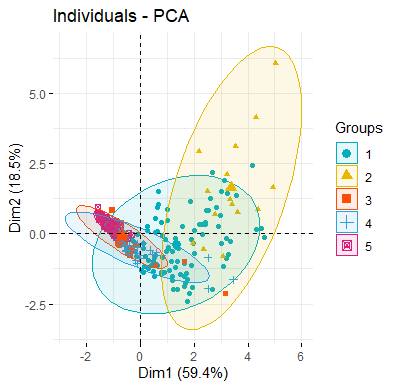

之前主要做了两类的判别，下面进行$k$类的多元总体判别分析。
不同之处主要在于初始组间均值显著性差异与组间方差显著性的分析。
利用判别分析的统计方法建立肝胆疾病的判别函数
（a）检验组间均值显著性差异
（b）分析组间方差显著性差异
（c）建立判别函数
（d）分析判别效果
并应用于“体检数据”中，根据体检资料分析是否有得肝胆疾病的可能性。
数据的临床诊断指标为总胆红素（T-BIL），白蛋白（Alb），碱性磷酸酶（ALP），谷丙转氨酶（ALT），样本分为五组，1代表慢肝，2比较杂糅，3代表慢胆，4代表急胆，5代表正常。
1 | rawdata<-read.csv("data.csv") |
- 观察数据
1 | > rawdata[rawdata$group==1,][1,] |
- 处理data
1 | data<-rawdata[,-1] |
Step1 $k$个多元正态总体的均值方差分析
我们要对$k$类总体进行判别分析，首先希望这$k$类总体有均值显著性差异，而若它有方差显著性差异那么一般的线性判别法将忽略掉方差信息，也会影响它的准确性。
首先可以提取它们前两个主成分直观地感受不同肝胆疾病的数据差异。
1 | library("FactoMineR") |

每个椭圆中心都有点代表它们的二维均值，直观上看它们是有差异的，且它们的方差也有差异。
多总体协方差阵的检验
检验
$$H_0: \Sigma_{1}=\Sigma_{2}=\ldots=\Sigma_{m}=\Sigma$$
构造检验统计量
$$\lambda_{4}=\prod_{l=1}^{m}(|S_{l}| /|{S}_{pooled}|)^{(n_l-1) / 2}$$
其中，$n_l$是第$l$组的样本量，$S_l$是第$l$组
样本协方差矩阵，$S_{pooled}$是合并的样本协方差矩阵，满足
$$S_{pooled}=\frac{1}{\sum_{l=1}^{m}(n_l-1)} \sum_{l=1}^{m}(n_l-1) S_l$$
当样本容量$n=\Sigma_{l=1}^m n_l$很大时，在$H_0$为真时有以下近似分布
$$
-2(1-b) \ln \lambda_{4} \sim_{a p p r o x} \chi^{2}(\nu), \nu=p(p+1)(m-1) / 2
$$
其中 $b=\left(\sum_{l=1}^{m}\left(n_{l}-1\right)^{-1}-\left(\sum_{l=1}^{m}\left(n_{l}-1\right)\right)^{-1}\right)\left(\frac{2 p^{2}+3 p-1}{6(p+1)(m-1)}\right)$
由此我们可以自己写出进行多元变量多总体协方差的检验的函数，以下代码的字符与运算公式基本与前面的数学公式保持一致。
一个需要注意的事情是$\lambda_4$是幂次乘积直接对它去做运算极有可能不是0就是Inf，这是十分不明智的，所以应该直接取对数运算。总之在写代码时还是需要一些小skills，我们得体谅一下计算机的运算精度。
1 | varcomp <- function(covmat,n) { |
- 函数应用
首先计算好每个组别的协方差阵将其存为list，每个组别的样本量存为一个向量。
1 | covmat <- vector("list",5) |
Perfectly done!
1 | > varcomp(covmat,n=n) |
其$p$值远小于$0.01$，说明方差有显著性差异。
多总体均值的检验
多元方差分析
这里我们需要在方差不相等情况下进行均值的检验。
又没有现成的函数可以用，我又要写理论写函数了，天越来越冷了，我越来越懒了，我们直接抓两个组别出来比一下。
1 | x1<-data[rawdata$group==1,];x1m<-apply(x1,2,mean);S1<-var(x1) |
$p=1.575946e-13$，故在显著水平0.01时两总体的均值有显著差异。
是否有现成的函数或包比如说ANOVA做多元变量多总体而且方差不齐性的均值检验有待探索。
好了，上面的这些工作其实都是为了保证后面的判别有意义。
Step2 多总体判别
建立判别函数
利用马氏距离进行多总体距离判别
$$d^2(X,G)=(X-\mu)’\Sigma^{-1}(X-\mu)$$
- 多总体距离判别
把$X$判给距离最近的那一个，设$i=l$时，若
$$d_l^2(X)=min_{i=1,…,k}{d_i^2(X)}$$则$X\in G_l$
1 | gnum<-length(unique(rawdata$group)) |
分析判别效果
判断正确的概率为56.1%，由于是五类判别，样本数据集也不多，还过得去吧。
1 | > table(re==rawdata$group)/nrow(rawdata) |
可以稍微看看它的结果，我发现它很容易把第五类错判为第三类，再反观之前的PCA图发现两者确实重合度比较高。所以说如果被判为慢胆，很容易是误诊说不定你就是正常人？？？
好吧其实还是可以考虑换其它判别方法再做尝试。或者有其它诊断指标，进一步鉴定……
Step3 应用于待测数据
然后我们将其应用于“体检数据”，进行医生肝胆病乱诊断系列
1 | data2<-read.csv("data2.csv") |
1 | > table(redata2) |
哈哈哈根据前面的分析判断为第三类（慢胆）的人极有可能是正常人，得出结论：看病不要找统计学家……
尴尬而不失礼貌地微笑，结束啦